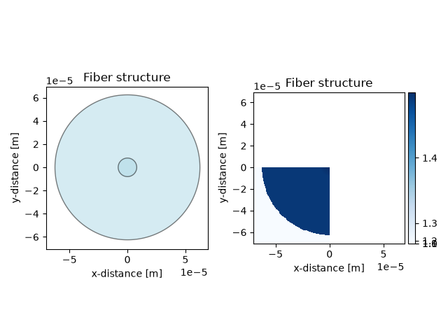
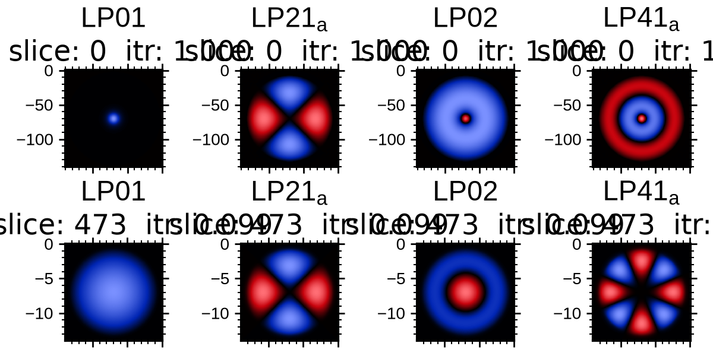
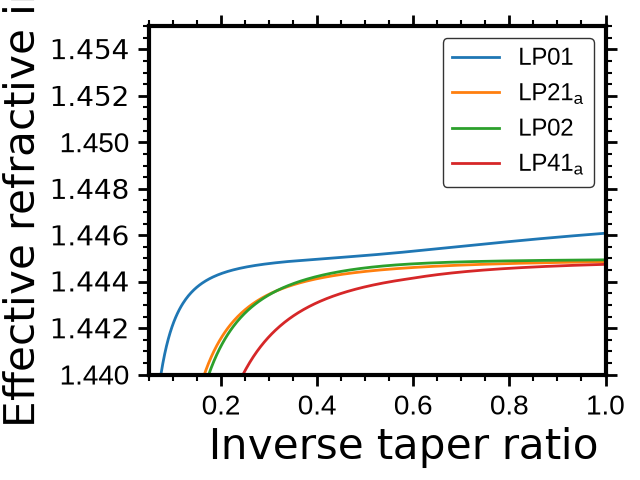
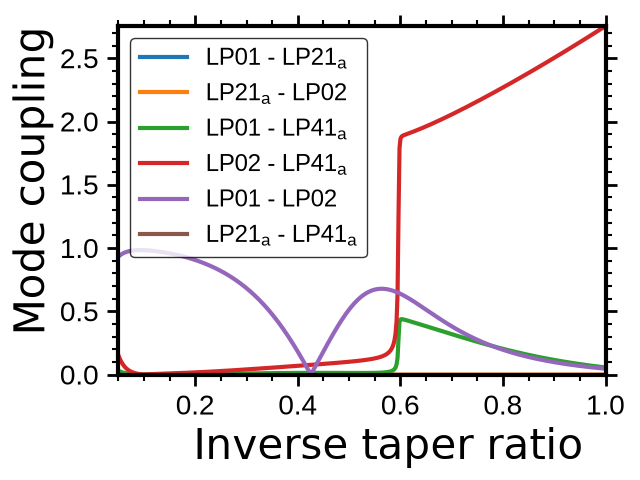
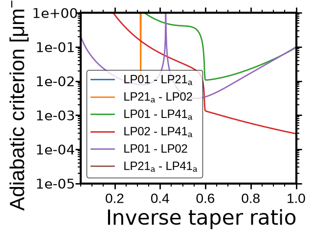

Note
Go to the end to download the full example code.
1x1 Coupler#
Importing the script dependencies
from SuPyMode.workflow import (
Workflow,
Boundaries,
BoundaryValue,
GenericFiber,
GradedIndex,
)
from PyOptik import material
wavelength = 1550e-9
Generating the fiber structure#
Here we define the cladding and fiber structure to model the problem
clad_refractive_index = material("SiO2").compute_refractive_index(
wavelength
) # Refractive index of silica at the specified wavelength
fiber = GenericFiber()
fiber.create_and_add_new_structure(
name="cladding", refractive_index=1.4450, radius=62.5 * 1e-6
)
graded_index = GradedIndex(inside=1.4480, outside=1.4450)
fiber.create_and_add_new_structure(
name="core", refractive_index=graded_index, radius=8.0 * 1e-6
)
Defining the boundaries of the system
boundaries = [
Boundaries(right=BoundaryValue.SYMMETRIC, top=BoundaryValue.SYMMETRIC),
]
Generating the computing workflow#
Workflow class to define all the computation parameters before initializing the solver
workflow = Workflow(
fiber_list=[fiber], # List of fiber to be added in the mesh, the order matters.
wavelength=wavelength, # Wavelength used for the mode computation.
resolution=120, # Number of point in the x and y axis [is divided by half if symmetric or anti-symmetric boundaries].
x_bounds=(-70e-6, 0.0), # Mesh x-boundary structure.
y_bounds=(-70e-6, 0.0), # Mesh y-boundary structure.
boundaries=boundaries, # Set of symmetries to be evaluated, each symmetry add a round of simulation
n_sorted_mode=4, # Total computed and sorted mode.
n_added_mode=2, # Additional computed mode that are not considered later except for field comparison [the higher the better but the slower].
debug_mode=1, # Print the iteration step for the solver plus some other important steps.
auto_label=True, # Auto labeling the mode. Label are not always correct and should be verified afterwards.
itr_final=0.05, # Final value of inverse taper ratio to simulate
)
workflow.initialize_geometry(plot=True) # Initialize the geometry and plot it
workflow.run_solver() # Run the solver to compute the modes

Field computation: \(E_{i,j}\)#
_ = workflow.plot(plot_type="field", itr_list=[1.0, 0.1])

Effective index: \(n^{eff}_{i,j}\)#
_ = workflow.plot(plot_type="index")

Modal normalized coupling: \(C_{i,j}\)#
_ = workflow.plot(plot_type="normalized-coupling")

Adiabatic criterion: \(\tilde{C}_{i,j}\)#
_ = workflow.plot(plot_type="adiabatic")
# -

Total running time of the script: (1 minutes 0.110 seconds)